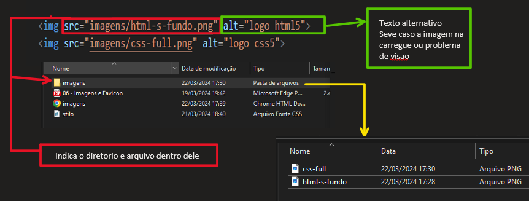

colocando a imagen dentro do site
IMAGENS DO DIRETORIO

CODE : 
caso esteja no mesmo diretorio do html pode-se apenas indicar o nome do arquivo
IMAGENS EXTERNAS
são colocadas a partir de links da internet

De forma resumida, na hora de escolher o formato de imagem para o seu site, opte sempre pelo formato JPEG com uma compactação entre 30% e 50%. O formato PNG só deverá ser usado quando precisarmos de transparência na foto. Combinado?
A regra de ouro nesses casos é: use imagens do tamanho certo! Vai precisar de
uma imagem que vai ter 200 pixels de largura? Gere um arquivo exatamente com
esse tamanho! Nada de ficar salvando arquivos gigantes e diminuindo o tamanho da
imagem com códigos.
Uma imagem 1920x1080 de 3MB não vai ficar mais leve se você mudar a largura dela
no seu CSS. Muito pelo contrário. Seu navegador vai levar um tempão pra carregar o
arquivo do seu servidor e vai exibir a imagem minúscula na tela.
E no que isso te prejudica? Os mecanismos de busca como o Google PENALIZAM
sites lentos e pesados, retirando-os da primeira página de buscas.
caso esteja no mesmo diretorio do html pode-se apenas indicar o nome do arquivo
são colocadas a partir de links da internet
para ti q tbm nao sabia oque era um "fovicon" não sabia o nome disto
* Para faser um icon pode se usar varios metodos descritos no final do pdf indexado.
* porem a maneira
mas pratica se fas a simples conversão para o formato ico pos este formato tem uma adesao moior nos
navegadores ,
* para tal podemos utilizar o site favicon.oi e é capas
de comverte de varios formatos
OBS : sim pode ser usados outros formatos como pnj
o esquema para inserir e como o de inserção de uma img comum,
A diferença é que a inserção no codigo deve ser feita através de um link favicon na cabeça (head) do codigo .